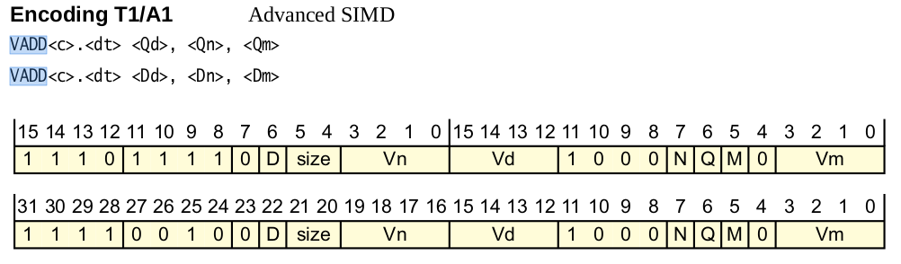

RISU
Table of Contents
1. RISU
1.1. Overview
RISU (Random Instruction Sequence generator for Userspace testing) 可以用来对比两个平台执行同样的的指令时结果是否一致, 例如可以用来测试 qemu 结果是否正确.
以 arm 平台为例, 它的工作流程是:
- 使用 risugen 脚本随机生成一些指令, 放在 test.out 中
- 在 native arm 平台上执行 risu (做为 master), 它会执行 test.out 中的指令
- 在另一个平台例如 qemu 上执行 risu (做为 apprentice), 它同样执行 test.out 中的指令
- test.out 中的指令除了正常的 arm 指令, 还会插入一些特殊的 risuop, 这些 op 会触发 SIGILL
- master 和 apprentice 的 sighandler 会 catch SIGILL, 双方的 sighandler 通过 socket 把数据 (当前寄存器和内存) 集中到 apprentice, 然后 apprentice 根据 risuop 的不同执行不同的检查, 例如 OP_COMPARE (检查寄存器), OP_COMPAREMEM (检查内存)
- 如果检查发现双方不一致, 说明 apprentice 实现有问题
risu 主要用来检查每条指令执行后双方的寄存器以及内存是否一致, 所以它无法检查跳转指令, 也不支持特权指令.
另外, risu 官方目前并不支持 mips 和 risc-v
1.2. Usage
$> cd risu; mkdir build; cd build $> CROSS_PREFIX=arm-linux-gnueabihf- ../configure --static $> make $> ../risugen --numinsns 10 --pattern 'VSTM.*' ../arm.risu vstm.out
使用 socket 来通信
# 正常情况下应该在一个 native arm 上执行, 这里只是测试, 所以用 qemu $> qemu-arm ./risu --master vstm.out master port 9191 master: waiting for connection on port 9191... # 在另一个 shell 中 $> qemu-arm ./risu --host 127.0.0.1 vstm.out apprentice host 127.0.0.1 port 9191 loading test image vstm.out... starting apprentice image at 0xff7ec000 starting image
使用 trace 文件来通信
$> qemu-arm ./risu --master vstm.out -t test.trace $> qemu-arm ./risu vstm.out -t test.trace
1.3. Implementation details
risu 实现分为三部分:
- risu.c
- risugen perl 脚本
- risugen 针对不同平台的指令配置, 例如 arm.risu, 以及少量的支持性的平台相关代码,例如
risu_reginfo_arm.c,risu_arm.c
1.3.1. risu.c
risu.c 同时实现了 master 和 apprentice 部分, 它的主要功能是:
- master 和 apprentice 通信
- 通过 sighandler 触发通信和检查, 并且用 sighandler 的 ucontext 读写寄存器 (参考 kernel signal, signal handling in DBT)
- 检查寄存器, 内存是否一致
main(): /* load_image 直接用 mmap 把 xxx.out load 进行, 且入口地址保存在 * image_start */ load_image(); if (ismaster): return master(); else: return apprentice();
1.3.1.1. master
master: set_sigill_handler(&master_sigill); image_start(); void master_sigill(int sig, siginfo_t *si, void *uc): send_register_info(uc); advance_pc(uc); send_register_info(void *uc): /* uc 是 ucontext, 包含 sigill 发生时 kernel stack 里的寄存器信息 */ reginfo_init(&ri[MASTER], uc); /* 发生 sigill 正常情况下是因为 image 中的 risuop 导致的, 通过 * ri->faulting_insn 获得这个 risuop */ op = get_risuop(&ri[MASTER]); header.magic = RISU_MAGIC; header.pc = get_pc(&ri[MASTER]); header.risu_op = op; switch (op): /* OP_COMPARE 和 OP_COMPAREMEM 需要 master 把 ri (register info) 或 memblock * (memory) 发送给 apprentice */ case OP_TESTEND: case OP_COMPARE: case OP_SIGILL: header.size = reginfo_size(&ri[MASTER]); extra = &ri[MASTER]; break; case OP_COMPAREMEM: header.size = MEMBLOCKLEN; extra = memblock; break; /* OP_SETMEMBLOCK 和 OP_GETMEMBLOCK 这两个并不需要发送信息给 apprentice: * 它们是负责让 memory 相关指令能读写到正确的内存地址 */ case OP_SETMEMBLOCK: case OP_GETMEMBLOCK: header.size = 0; extra = NULL; break; default: abort(); res = write_buffer(&header, sizeof(header)); if (extra): res = write_buffer(extra, header.size); switch (op): /* 这里会为了处理 OP_SETMEMBLOCK 和 OP_GETMEMBLOCK */ case OP_COMPARE: case OP_SIGILL: case OP_COMPAREMEM: break; case OP_TESTEND: return RES_END; case OP_SETMEMBLOCK: paramreg = get_reginfo_paramreg(&ri[MASTER]); memblock = (void *)(uintptr_t)paramreg; break; case OP_GETMEMBLOCK: paramreg = get_reginfo_paramreg(&ri[MASTER]); set_ucontext_paramreg(uc, paramreg + (uintptr_t)memblock); break; default: abort();
1.3.1.1.1. memblock
所谓 memblock, 是指有一些指令需要读写 memory (例如 load/store 指令), 为了测试这些指令是否正确, 需要 risu 想办法给这些指令提供一块可以读写的 memory, 称为 memblock.
risu 的做法是:
- risugen 时通过 write_memblock_setup 函数在 image 开头预留了一段空间做为 memblock, 并且插入一个 OP_SETMEMBLOCK 在运行时把该 memblock 的真实地址通过 paramreg (例如 r0) 通知给 risu
- 由于这个 memblock 是运行时才知道, 所以测试 memory 指令时, risugen 会先生成一个随机的 offset 在 paramreg 中, 然后通过一个 OP_GETMEMBLOCK 对 paramreg 进行修正: 把memblock 的真实地址加到 paramreg 中, 后续 memory 指令就可以读写 paramreg 这个地址了
- 每次 memory 相关指令后, 直接检查整个 memblock 就可以了
1.3.1.2. apprentice
apprentice_sigill(int sig, siginfo_t *si, void *uc): recv_and_compare_register_info(uc); advance_pc(uc); recv_and_compare_register_info(void *uc): /* ri[APPRENTICE] 是 apprentice 自己的 reg */ /* ri[MASTER] 是 master 传过来的 reg */ reginfo_init(&ri[APPRENTICE], uc); recv_register_info(&ri[MASTER]); op = get_risuop(&ri[APPRENTICE]); switch (op): case OP_COMPARE: case OP_TESTEND: case OP_SIGILL: reginfo_is_eq(&ri[MASTER], &ri[APPRENTICE]) break; /* OP_SETMEMBLOCK/OP_GETMEMBLOCK 的实现与 master 一样 */ case OP_SETMEMBLOCK: paramreg = get_reginfo_paramreg(&ri[APPRENTICE]); memblock = (void *)(uintptr_t)paramreg; break; case OP_GETMEMBLOCK: paramreg = get_reginfo_paramreg(&ri[APPRENTICE]); set_ucontext_paramreg(uc, paramreg + (uintptr_t)memblock); break; case OP_COMPAREMEM: /* 用 memcpy memblock 来比较 memory */ if (memcmp(memblock, other_memblock, MEMBLOCKLEN) != 0) { res = RES_MISMATCH_MEM; } break;
1.3.2. risugen
risugen 通过读 xxx.risu 生成包含多条随机指令和相应的 risuop 的 image.
write_test_code: $numinsns = $params->{ 'numinsns' }; if (grep { defined($insn_details{$_}->{blocks}->{"memory"}) } @keys): write_memblock_setup(); for my $i (1..$numinsns): gen_one_insn($forcecond, $insn_details{$insn_enc}); write_risuop($OP_COMPARE); sub write_memblock_setup(): my $align = $MAXALIGN; my $datalen = 8192 + $align; write_pc_adr(0, (4 * 4) + ($align - 1)); # insn 1 write_align_reg(0, $align); # insn 2 # NOTE: 通过 OP_SETMEMBLOCK 把 memblock 真实地址通知 risu write_risuop($OP_SETMEMBLOCK); # insn 3 write_jump_fwd($datalen); # insn 4 # NOTE: 在 image 预留空间 for (my $i = 0; $i < $datalen / 4; $i++): insn32(rand(0xffffffff)); sub gen_one_insn($$): # gen_one_insn 时前面已经通过 pattern 或 key 确定了要生成哪一条指令 INSN: while(1): # NOTE: 指令内容是随机填充的 my $insn = int(rand(0xffffffff)); $insn &= ~$fixedbitmask; $insn |= $fixedbits; if (defined $constraint): my $v = eval_with_fields($insnname, $insn, $rec, "constraints", $constraint); # NOTE: 如果不满足 constraint, 则重新开始 if (!$v): next INSN; # .... # 这条指令是 memory 指令 if (defined $memblock): # 在 arm.risu 中 memory 后是一段 perl 代码, 例如: # # VLD1_stoa A1a 1111 0100 1 d 10 rn:4 vd:4 11 00 sz:2 t a xm:4 \ # !constraints { ($d == 0 || $t == 0 || $vd != 0xf) && $sz != 3 && ($sz != 0 || $a != 1) && ($rn != $xm); } \ # !memory { reg($rn); } # # 其中 reg($rn) 这个 perl 代码在这里会用来生成特定的指令 # $basereg = eval_with_fields($insnname, $insn, $rec, "memory", $memblock); # 输出 insn 到 image 中 insn32($insn); if (defined $memblock): # NOTE: OP_COMPAREMEM write_risuop($OP_COMPAREMEM); sub reg($@): my ($base, @trashed) = @_; write_get_offset(); # 把 r0 中的地址 mov 到 $base 寄存器以便指令能使用这段内存 write_mov_rr($base, 0); write_mov_ri(0, 0); sub write_get_offset(): # 随机生成一个 memblock 范围由的 offset, 运行时通过 OP_GETMEMBLOCK 会得到真正的地址 my $offset = (rand(2048 - 512) + 256) & ~($alignment_restriction - 1); write_mov_ri(0, $offset); # NOTE: OP_GETMEMBLOCK write_risuop($OP_GETMEMBLOCK);
1.3.3. xxx.risu
以 arm.risu 为例:
risu 配置用来枚举所有的指令的名字, 格式, constraints 以及是否需要访问内存. 它的结构与 qemu 的 decodetree 使用的 insn32.decode 有些类似.
例如:
VSTM A1a cond:4 110 p 1 d w 0 rn:4 vd:4 1011 00 imm:5 x \
!constraints { $p != 1 && $imm != 0 && $imm <= 16 && ((($d << 4) | $vd) + $imm) <= 32; } \
!memory { reg($rn); }
VADD A1 1111 0010 0 d sz:2 vn:4 vd:4 1000 n q m 0 vm:4
以 VADD 为例, 它与 arm 手册中的定义是完全一致的:

如果 risugen 生成指令时选择了 vadd 指令, 它会:
- 首先生成一个随机的 32 bit 指令 insn
- 根据上面的指令模板中的 0/1 把 insn 的相应 bit 置位/复位
- 解析出 vn, vd, n, q, m, vm 等 field 的值, 如果指令模板中有指定 constraint, 则使用 field 值去测试 constraint 是否满足
- 如果指令模板有指定 memory, 则使用 reg 等函数生成随机的地址, 并插入一些 memblock 相关的 risuop: OP_SETMEMBLOCK, OP_GETMEMBLOCK 和 OP_COMPAREMEM